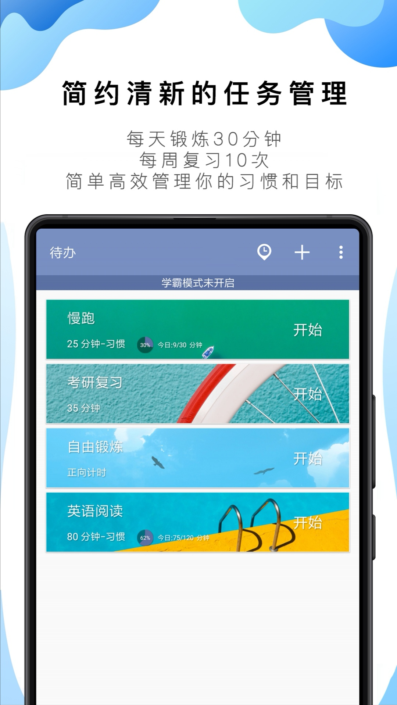
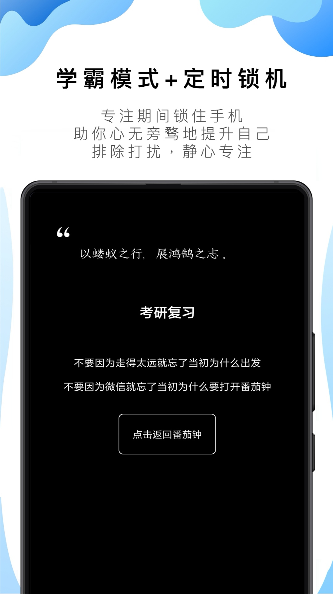
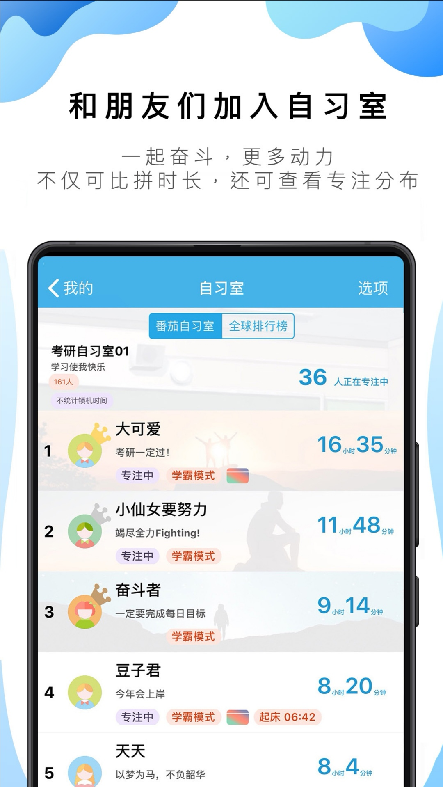
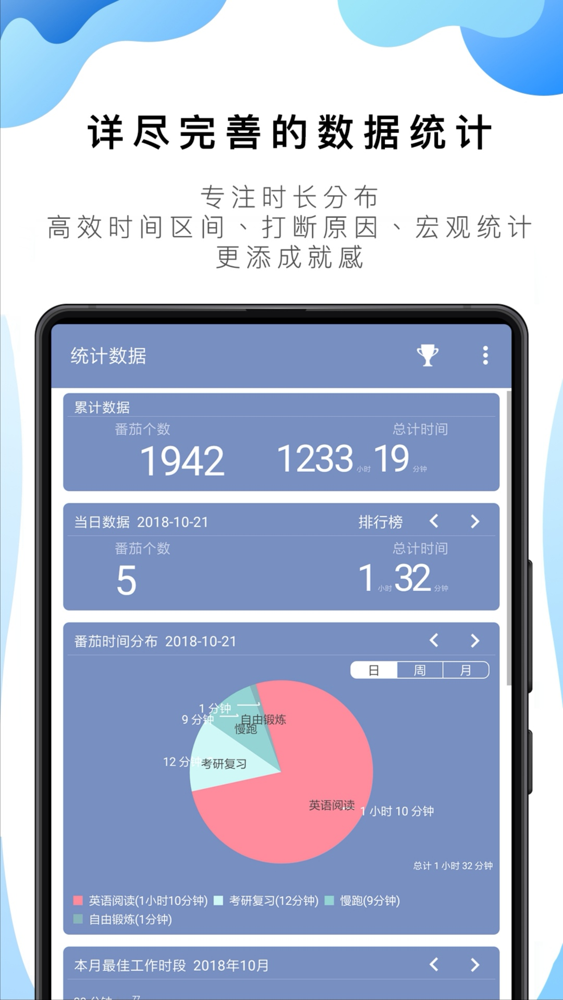

番茄工作法是简单易行的时间管理方法，由弗朗西斯科·西里洛（Francesco Cirillo）于1992年创立。
使用番茄工作法，选择一个待完成的任务，将番茄时间设为25分钟，专注工作，中途不允许做任何与该任务无关的事，直到番茄时钟响起，然后休息5分钟。一个番茄时间内如果做与任务无关的事情，则该番茄时间作废。 番茄工作法极大地提高了工作的效率，还会有意想不到的成就感。
番茄ToDo是基于番茄工作法理念的软件，每个添加的待办都可作为番茄钟来使用，点击待办卡片上的"开始"按钮即可开始番茄钟。
1. 为了更好践行“番茄时间内保持专注”的理念，我们也设计了学霸模式来帮助您专注，避免手机带来的分心。
2. 和传统的番茄工作法软件不同的是，您可以自己设定一个番茄钟的时长和休息时长，而不是死板的 25 分钟和5 分钟。您甚至可以不指定时间，选择“正向计时”当做时间记录App来使用。
3. 另外，番茄ToDo 吸收了一万小时理论和习惯养成理论。您可以把番茄工作法和您的“计划”或者“习惯”相结合，用时间来量化自己的习惯和目标。
4. 除此之外，您只需要专注，软件会自动生成统计分析数据，以供您查看自己的时间分配。
   